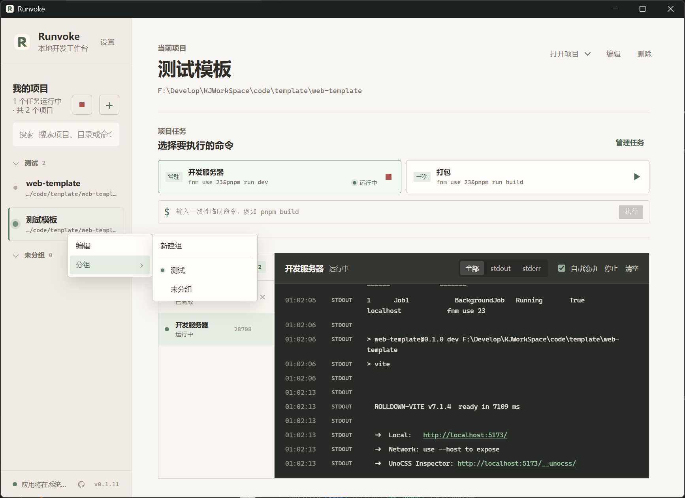
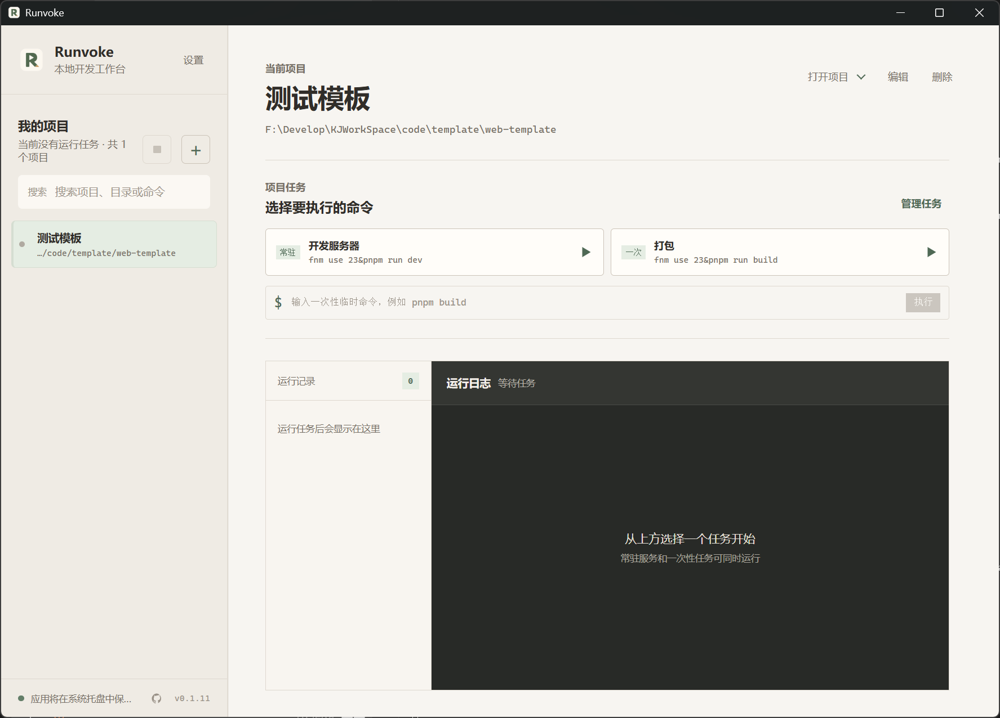
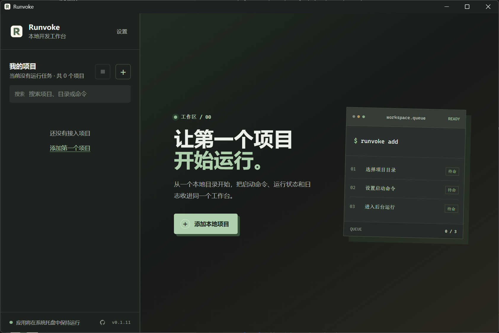

从熟悉的编辑器导入
从 VS Code 或 Cursor 的最近项目中勾选导入，已有项目自动跳过。
为 Windows 打造的本地开发工作台
告别层层叠叠的终端窗口。Runvoke 把项目、常用命令、运行状态和实时日志放在一起，让启动与观察都变得简单。

从项目启动到任务结束，始终清楚。
更轻的工作方式
把频繁切换、反复确认的事情集中起来，让工作区重新变得清楚。
不必再靠终端标题辨认正在做什么。
告别反复查找命令和重走启动流程。
状态与记录都在眼前，不再凭感觉猜测。
核心功能
从打开电脑到结束一天的工作，Runvoke 替你收好那些重复、分散又容易忘记的操作。
为每个项目保存常用任务，按分组整理并自由拖动排序。需要开发、构建或执行临时命令时，不必再寻找目录和翻找历史记录。
当前项目
同一项目的多个任务可以并行运行，每一次启动都有独立状态与日志。哪里出错、何时结束、该停止哪个任务，都清清楚楚。
系统正在启动「开发服务器」
输出Local: http://localhost:4175/
输出ready in 428 ms
状态任务已进入运行状态
从 VS Code 或 Cursor 的最近项目中勾选导入，已有项目自动跳过。
窗口在后台时，桌面通知会告诉你任务成功完成，还是遇到了问题。
关闭窗口后继续在后台守候，需要时随时回来，不打断正在运行的任务。
发现新版本后由你确认安装；有任务运行时，会先安全停止再继续。
常见项目，都能归位
只要能通过本地命令启动，就能交给 Runvoke 集中管理。
↕ 自动滚动 · 滚动页面可加速C:\Users\you\Runvoke
只在你的电脑上工作
Runvoke 只做一件事：在本机替你整理并执行明确配置的命令。它不会上传项目，也不会改变你的开发方式。
使用方式
没有复杂的初始化流程。把日常项目放进来，之后的启动与观察都留在同一处。
选择本地项目目录，确认名称和常用任务。
点击运行开发服务、构建任务，或输入临时命令。
在运行记录与实时日志里掌握每一次执行。
桌面体验
浅色与深色主题都为长时间使用而设计。你的主题选择、项目分组和侧栏宽度都会被记住。


开始使用
免费下载 Runvoke，把今天要运行的项目，放进一个井然有序的工作台。
当前版本 v0.1.13 · 免费使用 · 通过 GitHub Releases 下载常见问题
不会。项目配置、运行状态和日志都保存在你的电脑上，Runvoke 只执行你明确配置的本地命令。
只要项目能通过本地命令启动，就可以加入 Runvoke。开发服务、后端服务、构建任务、脚本和临时检查都能统一管理。
可以。每一次运行都有独立记录、状态和日志，你可以准确查看或停止其中任意一个。
当前正式版本面向 Windows。其他系统版本尚未提供，请关注项目主页的后续动态。